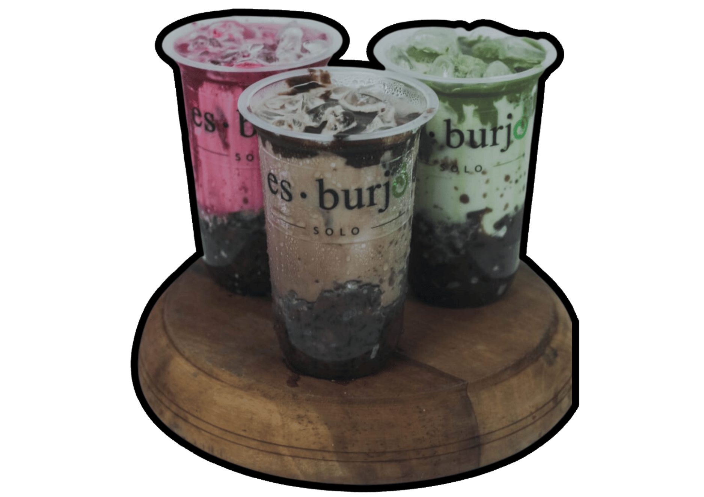

"Es Burjo Solo: Minuman Kekinian yang Segar dan Menggugah Selera"
Es Burjo Solo adalah salah satu minuman kekinian yang tengah menjadi favorit banyak orang. Dipopulerkan oleh gerai-gerai kafe dan warung kopi, minuman ini berhasil mencuri perhatian pecinta kuliner dengan cita rasa segar dan unik. Meskipun memiliki akar dari nama "Bubur Johor Solo," minuman ini telah mengalami evolusi yang kreatif dan menghadirkan sentuhan baru pada resep aslinya. Es Burjo Solo adalah perpaduan yang menarik antara kenikmatan es krim dengan kelezatan bahan-bahan khas Indonesia.
Secara tradisional, Es Burjo Solo terdiri dari beberapa lapisan yang memukau, dimulai dari es serut yang lembut sebagai dasar. Lapisan es serut kemudian ditambahkan dengan taburan kacang hijau rebus, biji selasih yang kenyal, dan potongan pisang matang yang manis. Kemudian, ditambahkan juga potongan roti tawar yang telah dipanggang garing dan keju parut yang melengkapi cita rasa. Untuk menyajikannya, es ini dihidangkan dalam mangkuk besar dengan tambahan susu kental manis atau sirup gula merah sebagai pemanisnya.
Seiring dengan berkembangnya tren minuman kekinian, Es Burjo Solo juga mengalami beragam inovasi rasa. Beberapa penjual menambahkan varian baru seperti cokelat, stroberi, atau matcha untuk memberikan pilihan lebih bervariasi bagi konsumen. Kreativitas dalam menghadirkan Es Burjo Solo memungkinkan para penikmatnya untuk menyesuaikan rasa sesuai dengan preferensi pribadi, menjadikannya minuman yang sangat disesuaikan dan menarik bagi berbagai kalangan.
Salah satu faktor yang turut mendorong popularitas Es Burjo Solo adalah peran media sosial dalam menyebarkan tren kuliner. Gambar-gambar menarik dan menggugah selera tentang minuman ini seringkali menjadi viral di platform-platform seperti Instagram dan TikTok. Fenomena ini berkontribusi pada pertumbuhan pelanggan dan meningkatkan penjualan bagi para penjual Es Burjo Solo. Selain itu, media sosial juga memberikan kesempatan bagi para pelaku bisnis kuliner untuk berinovasi dan bersaing dalam menciptakan minuman kekinian yang unik dan menarik.
Tak hanya menjadi tren kuliner, popularitas Es Burjo Solo juga berdampak pada perekonomian lokal di daerah asalnya. Bisnis penjualan Es Burjo Solo membuka peluang kerja bagi penduduk setempat, seperti pembuat es serut, tukang kacang hijau, pedagang pisang, dan petani selasih. Di samping itu, wisatawan kuliner yang datang untuk mencicipi minuman kekinian ini juga berpotensi meningkatkan kunjungan pariwisata ke daerah Solo dan sekitarnya, membawa dampak positif pada sektor ekonomi lainnya.
Es Burjo Solo adalah contoh nyata bagaimana tradisi kuliner lokal dapat menginspirasi kreasi inovatif dalam dunia minuman kekinian. Dengan cita rasa yang menyegarkan dan penampilan yang menggoda, minuman ini berhasil menarik perhatian banyak orang dan menjadi salah satu favorit dalam tren kuliner masa kini. Keberhasilan Es Burjo Solo juga mengajarkan kita tentang pentingnya mendukung dan mempromosikan kuliner lokal, karena di balik setiap makanan atau minuman, terdapat cerita dan dampak sosial yang tak ternilai.